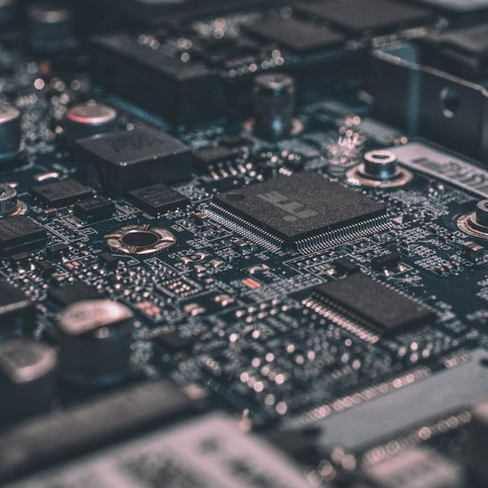

Categoria da notícia
Título principal da notícia em destaque
Breve descrição da notícia em destaque, apresentando os principais pontos abordados no texto completo. O objetivo é despertar o interesse do leitor e convidá-lo a continuar a leitura.
Informação de qualidade para toda a comunidade
Categoria da notícia
Breve descrição da notícia em destaque, apresentando os principais pontos abordados no texto completo. O objetivo é despertar o interesse do leitor e convidá-lo a continuar a leitura.

Tecnologia
Resumo breve sobre a notícia de tecnologia e seus impactos.
Data da notícia
Campus
Resumo breve sobre a notícia do campus e suas atividades.
Data da notícia
Cultura e Lazer
Resumo breve sobre a notícia de cultura e lazer da região.
Data da notícia